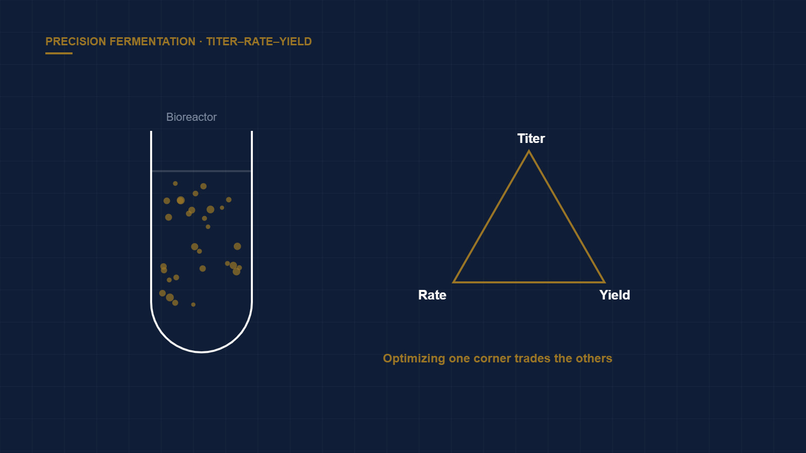

Precision Fermentation: Reading the Titer-Rate-Yield Triangle
← Back to Intelligence Hub
Industrial biotech and precision-fermentation pitches love a single hero metric — almost always titer. It is the easiest number to cherry-pick and the least informative in isolation. Commercial success lives in the tension between three variables that trade off against one another, and a strain optimized for one can be quietly uneconomic on the others.
The triangle
- Titer — grams of product per liter of broth. It sets the concentration the downstream process has to work with. Impressive alone, but silent on speed and cost.
- Rate (productivity) — grams per liter per hour, i.e., how fast that titer is reached. A record titer over a 10-day fermentation may occupy the bioreactor so long that it is commercially useless; fermenter time is capital.
- Yield — grams of product per gram of feedstock consumed. Because feedstock (sugar, typically) is the dominant variable cost at scale, yield usually governs the marginal economics more than the other two.
Why a single metric lies
A strain engineered for record titer at the expense of yield can have worse unit economics than a "lower-performing" strain that converts feedstock efficiently — because every gram of sugar diverted to biomass or byproduct instead of product is money burned.
Founders under fundraising pressure optimize the number investors ask about. If diligence only asks about titer, that is what the strain program delivers — sometimes by trading away the yield that actually decides whether the process makes money. The three corners genuinely pull against each other: pushing titer can stress the cells and depress yield; pushing rate can generate metabolic heat and byproducts.
Downstream is half the cost
The metric obsession also ignores that separation and purification (downstream processing, or DSP) frequently rivals or exceeds fermentation cost. Titer matters here in a second-order way: low product concentration means more water to remove and larger, costlier purification trains. Two strains with identical yield can have very different total costs once DSP is included.
The diligence questions
- Show all three metrics from the same runs at the same scale — not three best-cases stitched from different experiments.
- How do titer, rate, and yield move together as scale increases from bench (1–10 L) to pilot (1,000+ L)? Oxygen transfer, mixing, and heat removal all degrade with scale and can collapse bench performance.
- What is the downstream separation cost, and how does titer drive it?
- What is the feedstock, and what does the yield imply for cost per kilogram at commodity sugar prices?
Verdict
Interrogate the whole triangle — plus downstream cost and scale-up behavior — before the bioreactor does it for you. A team that volunteers all three metrics together, names the trade-offs, and shows how they hold from bench to pilot is a team that understands its own process. One that leads with a single headline titer is either naïve or selling.